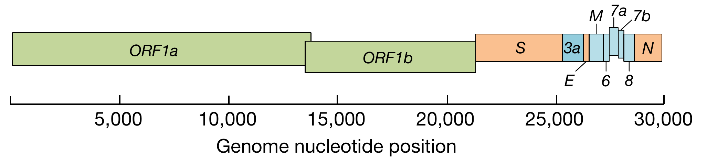
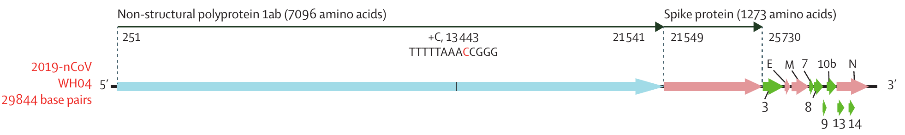
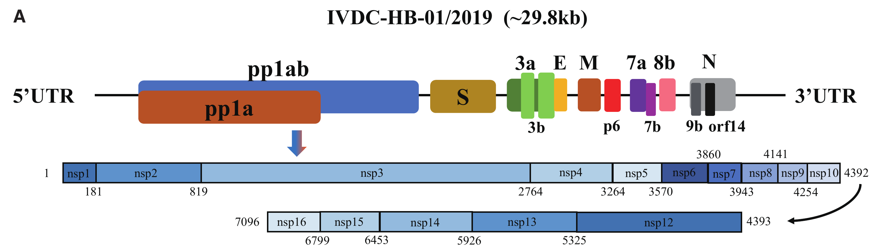
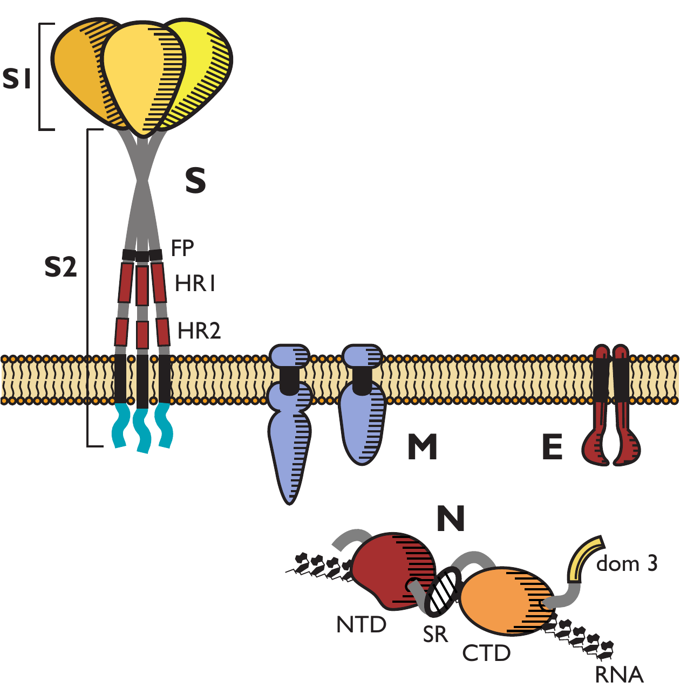

[NB: This was a very difficult document to pitch correctly. I reserve the right to shuffle content around between the footnotes as the main text to aid understanding, and am keen for non-expert feedback.]
Behold, a machine of great and terrible power:

This1 is SARS-CoV-22, the virus responsible for the current COVID19 pandemic, which is shaping up to be the worst in a century. Lots of people are going all-out trying to model the disease and predict what will happen next; I’ve been taking a somewhat different approach, starting with the virus itself and moving out from there. This has been mostly for my own education, but I’m sharing what I’ve learned here as well; it’s often more motivating to work on something when you have an audience in mind.
Today I’ll focus on the structure of the SARS-CoV-2 virion: what it’s made of and how it works. The next post will talk about how the virus gets into cells and discuss its replication cycle, with all the usual entertaining viral tricks. I hope for future posts to cover things like the pathology of the virus, how it interacts with the immune system, and how the various known and proposed countermeasures work. There’s some chance I drop all this to jump on the epidemiology/modelling bandwagon in the near future instead.
Take a closer look at the particles in the image above. In the middle of each virion3 is a large red area. That’s the nucleocapsid, containing the packaged-up viral genome. Surrounding the nucleocapsid are two dense layers stained in yellow; that’s the viral envelope, made of cellular membrane stolen from the host cell. The two dense layers are the two sides of the phosolipid bilayer. Finally, the blue corona surrounding the virion comprises the heads of spike proteins projecting from the envelope; these proteins are responsible for recognising and orchestrating invasion of host cells and so are key to the viral replication process. As is so often repeated in the news media, it’s these spike proteins that give the coronaviruses their distinctive appearance, and their name.
[TODO: How big is the coronavirus virion as a whole? How much does it weigh?]
In this post I’ll tackle each of these components in turn, starting with the genome and moving outwards until we’ve covered the entire virion. Then, next time, I’ll discuss how the machine actually works: how it gets into cells, replicates its genome, and produces new virions to infect more cells.
The SARS-CoV-2 genome
The genome is the central component of the virion, both spatially, (it’s surrounded by everything else) and functionally (it’s the point of the whole business). Like other coronaviruses, SARS-CoV-2 has a linear, single-stranded, positive-sense, nonsegmented RNA genome. Rattling off a list like this tells you a lot about the virus if you know some virology, so let’s clarify these terms in context.
- RNA: Viral genomes can be composed of either DNA (like our genome) or RNA (like the rest of our nucleic-acid machinery). In combination with the strandedness and sense of the genome (see below), what the viral genome is made of determines what hoops the virus has to jump through to get the host cell to replicate its genome and express its genes, and hence has a big impact on viral biology. RNA replication is typically much more error-prone than that of DNA, giving RNA viruses much higher mutation rates than DNA viruses4. However, due to unusual features of their replication machinery5, coronavirus genomes are unusually stable for RNA viruses; as a result, coronaviruses have the largest genomes of any RNA virus group6.
- Single-stranded: Both DNA genomes can be either single- or double-stranded. A double-stranded DNA (dsDNA) genome takes on the familiar double helix structure we’re used to seeing; a dsRNA genome is similar. Single-stranded nucleic acids (ssRNA and ssDNA) can form complex secondary structures through internal base-pairing, which in the case of viruses can be important to their behaviour inside the cell.
- Positive-sense: The “sense” of a single-stranded nucleic acid molecule7 specifies whether it codes for protein directly (positive-sense) or is the reverse-complement of a sequence that codes for protein (negative-sense)8. Given a few other requirements, a positive-sense RNA (henceforth (+)ssRNA) virus has the easiest time, since its genome can be immediately and directly read by the cell’s protein-synthesis machinery upon cell entry9.
- Linear: Nucleic acid molecules can be linear, with a 5’ and a 3’ end10, or circular, with no end at all. Coronaviruses have linear genomes.
- Nonsegmented: RNA viruses often have their genomes divided up into multiple separate RNA molecules, referred to as segments, which are packaged up together inside the virion but are replicated separately inside the host cell11. Coronaviruses, including SARS-CoV-2, do not have segmented genomes; each virion contains a single RNA molecule encoding the entire genome.
The SARS-CoV-2 genome is about 30,000 bases (30 kb) in length, long for an RNA virus but in line with other coronaviruses. For comparison, HIV-1 has a genome of about 10kb, influenza A’s genome is ~14kb, and polio’s is ~7.5kb12, while those of SARS-CoV and MERS-CoV are both very close in size to SARS-CoV-2.
So much for the viral genome as a molecule. What about its actual content? If you look for diagrams of the genome structure for SARS-CoV-2, you find things like this:

Or this:

Or this:

This tells us that the scientists in the field have yet to reach complete consensus on structure, nomenclature, or basic standards of graphic design. I’m going to go with the last version13, which came out less than a week ago at the time of writing and is hopefully fairly up-to-date14. That paper finds 14 open reading frames (coding sequences, more-or-less15) encoding 27 different viral proteins. Some of these ORFs overlap with or are embedded in others16, which is exactly the kind of dirty trick you expect from viral genomes – they’re under extreme pressure to fit a lot of information into a very small space.
The star of the show, though, is the gigantic ORF taking up the first two-thirds of the genome, labelled variously ORF1a/1b, pp1ab, or in some sources rep1a/1b. This is the gene that is translated into protein immediately upon cell entry, and that has to co-ordinate expression of all the other viral genes. To do this you need a lot more than one functional protein, but only the first ORF in the genome gets translated “for free” by the cellular machinery. To solve this problem, the first ORF produces a gigantic polyprotein comprising many different important proteins strung together. This polyprotein contains two different protease (protein-cutting) domains, which it uses to cut itself into fifteen different functional pieces.
(Some of you may be confused by the fact that the diagram above shows two different ORFs, labelled pp1a and pp1ab. This is more viral genome deviousness; I’ll explain in more detail next time. Focus just on pp1ab for now and forget about pp1a for a bit.)
These fifteen pieces are then folded into fifteen different functional proteins, collectively called non-structural proteins (nsps) since they don’t form part of the final virion. I won’t list them exhaustively here, but they include most of the key components involved in forming the viral replicase-transcriptase complex (RTC), which is responsible for copying the viral genome and expressing viral genes other than ORF1. Others act to impede the host cell’s internal immune system, or to shut down production of host cell proteins so it can focus exclusively on making new viruses. For some (such as nsp2) the function is still not understood.
Downstream of the gigantic first ORF are twelve much smaller ORFs coding for the other twelve viral proteins. These are divided into two categories: the four core structural proteins S, E, M and N, and eight accessory proteins. The four structural proteins are always present, in the same order, in all coronavirus genomes; the accessory proteins are interspersed around (or inside) the structural proteins, and vary much more from virus to virus.
I’ll talk more about the structural proteins when I talk about the viral replication cycle next time.
- As I said at the start, the spike protein (S) is responsible for recognising and binding receptor proteins on the surface of the host cell
S1 is highly divergent between
responsible for recognising and orchestrating invasion of host cells and so are key to the viral replication process
- The membrane protein (M) is the most abundant of
is the primary protein responsible for inducing and maintaining membrane curvature in order to make and maintain the viral envelope. It also interacts with the nucleocapsid to attach the viral genome to the envelope. It is

-
Image credit NIAID, via Wikipedia. There are lots more great images available here; I went with the one everyone else is using because it helpfully distinguishes the different parts of the virion. ↩
-
The name is due to the virus’s genetic similarity to the original causative agent of SARS, SARS-CoV, which was judged high enough that the virus should be considered part of the same viral “species” and not get its own name. This has proven controversial, and there has been some back and forth on whether a different name would be better. The tangles people have been getting into trying to find a decent name for this thing should give you an idea of why everyone used to just name viruses after the locations of outbreaks. ↩
-
A virion is an individual, independent virus particle. It’s a more specific term than “virus”, which can also refer to the viral genome and its activities inside the cell. ↩
-
These high mutation rates, which are about three orders of magnitude greater than those for DNA viruses, allow RNA viruses to evolve very rapidly, which is a major reason why they are the number-one pathogens of pandemic concern. ↩
-
Specifically, unlike most RNA viruses, the replicase-transcriptase complex of coronaviruses possesses proofreading activity, allowing it to detect and correct errors. ↩
-
The error rate of a replicator imposes a size limit on its genome, known as its error threshold. Above the error threshold, mutations inexorably destroy the information stored in the genome. Hence, a lower mutation rate permits a larger genome size, which carries advantages if there is a limit on the genetic complexity that can be fit into a given length of genome sequence. I don’t really understand error thresholds yet and will come back to this in future. ↩
-
Double-stranded nucleic acids always comprise two complementary strands, one in positive sense and one in negative sense, so this distinction doesn’t apply to them. ↩
-
Some single-stranded viral genomes are ambisense, meaning that both the genome and its reverse-complement code for (different) proteins. Such is viral genetics. ↩
-
Negative-sense RNA viruses must go through an extra step of converting their negative-sense genomes into positive-sense copies before protein synthesis can occur, and hence must include the machinery for doing this in their virions. ↩
-
5’ and 3’ refer to two of the carbon atoms in the nucleic acid backbone. Successive nucleotides are added to the nucleic-acid chain such that the 5’ carbon of the new nucleotide is linked (via phosphate group) to the 3’ end of the previous nucleotide, giving the chain an intrinsic directionality. Paired nucleic-acid chains run in opposite directions, so the 5’ end of the forward strand corresponds to the 3’ end of the reverse strand. All this is very important to understanding molecular genetics. Wikipedia has an explanation here. ↩
-
This is important for the evolution of segmented viruses, since if the same cell is infected by multiple strains their segments can get shuffled together. This option is unavailable to nonsegmented viruses like SARS-CoV-2. ↩
-
DNA virus genomes can be (but are not always) much larger; adenovirus has a genome of ~36kb and herpes simplex 1 has a genome of ~150kb. As for cellular organisms, E. coli‘s genome is about 1.5 megabases (Mb), yeast is ~12 Mb, and the human genome, famously, is ~3.2 gigabases in size. ↩
-
Note that, unlike the others, this most recent genome diagram is not to scale. ↩
-
The speed of development in this space is breathtaking to those of us used to the more sedate pace of academic science; the week-old paper I’m using already has 29 citations on Google Scholar. ↩
-
RNA base sequences are converted into protein amino-acid sequences in sets of three (known as codons): GAR produces glutamic acid, UCA produces serine, and so forth. How you break up a continuous string of RNA bases into codons specifies a reading frame; if you start translating one base forward or back you get a different reading frame and a completely different (usually useless) protein results. A reading frame is open if it can be translated into a protein by the appropriate cellular machinery. ↩
-
To get one gene to overlap with another, you need the same sequence to produce two different, functional proteins when read in different reading frames (see previous footnote). This is pretty hard, but viral evolution is very smart. ↩
Comments